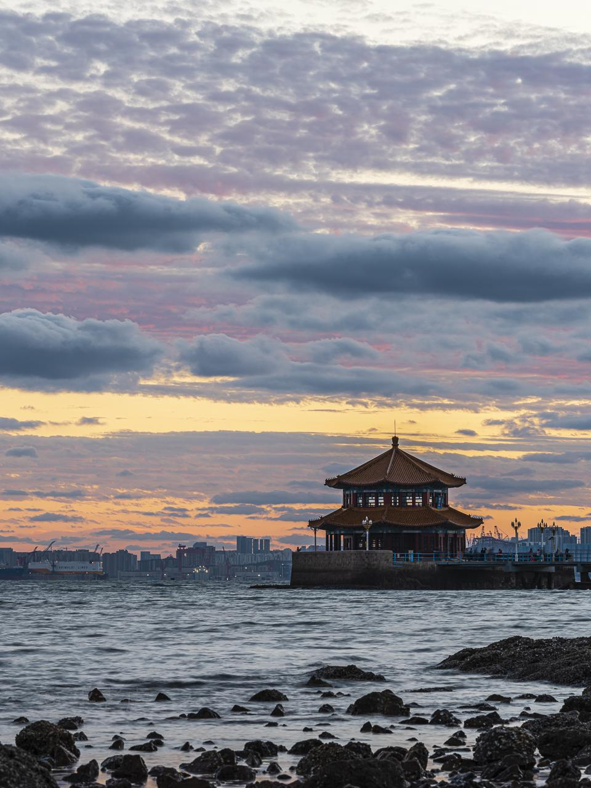

Introduction
一座城市的百年守望
栈桥，始建于清光绪十八年（1892年），是青岛最早的军事专用人工码头。全长440米，从太平路海岸一直延伸至青岛湾深处。桥南端建有民族风格的八角亭阁——「回澜阁」，阁顶覆金色琉璃瓦，在碧海蓝天之间格外醒目。
百余年来，栈桥历经多次修缮与重建，从最初的军事码头蜕变为青岛最著名的城市地标。它见证了这座城市的沧桑巨变，承载了几代青岛人的记忆。有人说，没到过栈桥，就不算到过青岛。
如今，栈桥已成为游客必到的打卡地。冬季时分，成千上万只西伯利亚海鸥飞来过冬，在栈桥上空盘旋飞舞，喂海鸥成了冬日青岛最温暖的一道风景线。
Visitor Info
🕐
建议时长
1-2小时
🎫
门票
免费
📍
地址
市南区太平路14号
🚶
距青岛站
步行5分钟
⏰
最佳季节
全年（冬季看海鸥）
📸
拍照机位
栈桥西侧沙滩
Gallery
光影回澜

Tips
游玩建议
📷 最佳拍照
清晨或傍晚光线最柔和，从栈桥西侧沙滩拍摄可同时拍到回澜阁与城市天际线。退潮时可以走到礁石上，角度更佳。
🕊️ 喂海鸥
每年11月至次年4月，西伯利亚海鸥来青岛越冬。可以在栈桥上或海边投喂，最佳投喂时间在上午10点前。
🎯 周边联动
栈桥距天主教堂步行10分钟，距大学路网红墙步行15分钟，距信号山公园步行20分钟，可以串成一条老城漫步路线。
⚠️ 注意事项
节假日人流量极大，建议早上去。冬季海风大，注意保暖。涨潮时注意安全，不要到护栏外拍照。